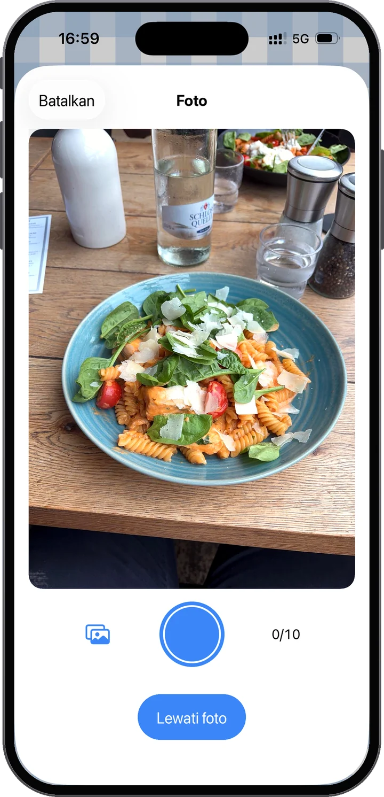
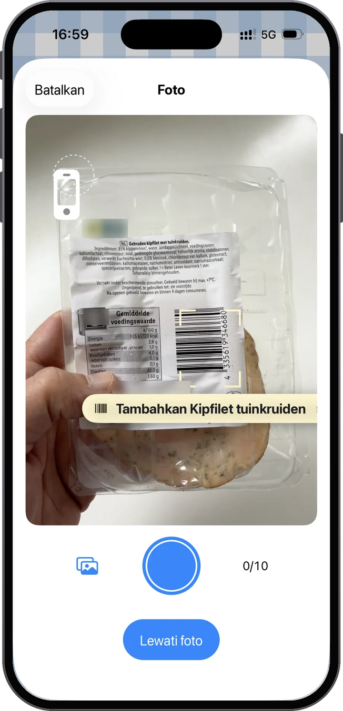
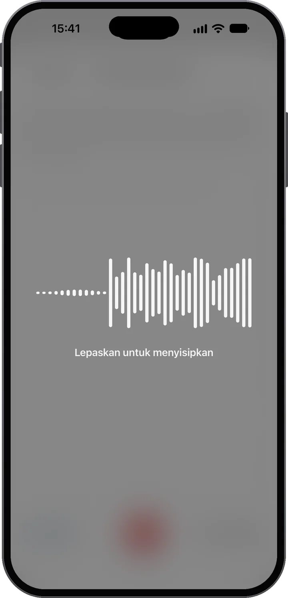
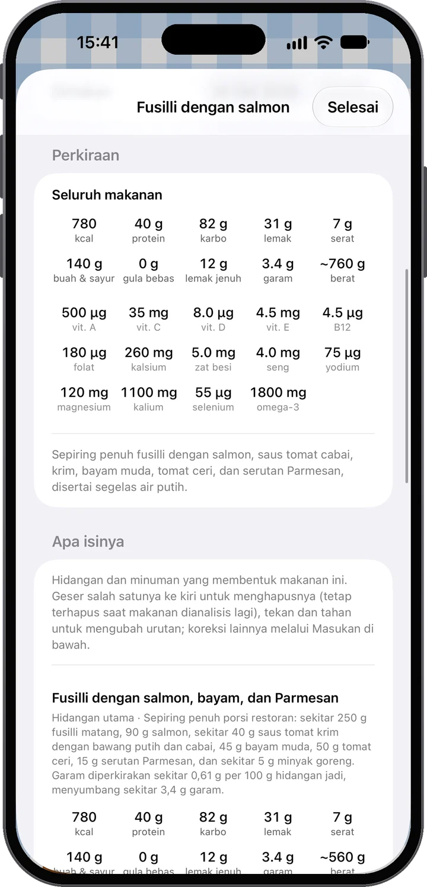
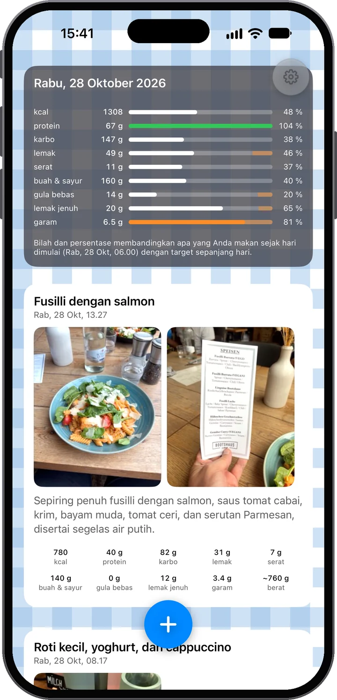
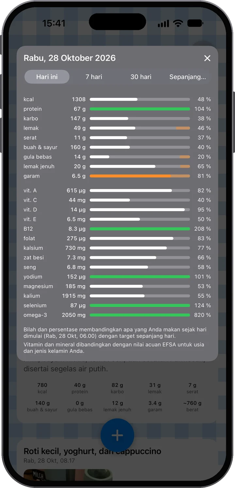

Hampir tanpa usaha — tapi banyak pemahaman.
Foto makananmu — satu jepretan atau beberapa. Lalu tambahkan konteks: ketik catatan, atau tahan saja mikrofonnya dan bicara. “Dua telur ceplok dan roti yang kecil” sudah cukup.
Makananmu dianalisis untukmu: energi, protein, karbo, lemak, serat, buah dan sayur, gula bebas, dan garam, hidangan demi hidangan, dengan jujur menyebut seberapa yakin perkiraannya — dan kamu lihat bagaimana semuanya pas dengan harimu.
Sepanjang hari, feed-mu terisi dan bilah hari ikut bertambah. Kamu melihat bagaimana hari makanmu berkembang dan di mana posisimu — sebelum memilih makanan berikutnya, bukan sesudahnya.
Seharian makanmu sudah seimbang? Bilahmu akan menunjukkannya. Jadi ambil saja hidangan penutupnya — dan nikmati tanpa rasa bersalah: kamu masih sesuai target, dan itu kata datamu sendiri, bukan tebakan.

Foto lebih dulu
Foto adalah sumber utamanya. Analisis membaca hidangan dan porsinya — bahkan label gizi atau kode batang kalau ada di foto. Dan tak harus satu foto: satu makanan bisa memuat hingga sepuluh. Masak malam ini? Foto bahan-bahannya sambil memasak, lalu piring yang sudah jadi — analisis menyatukan semuanya.

Atau pindai barcode
Arahkan kamera ke barcode dan Food Moments menemukan produknya beserta tabel gizinya — tanpa foto. Pindai beberapa produk dan semuanya jadi satu makanan; tambahkan foto masakanmu dan analisisnya memakai angka persis dari label. Data produk dari Open Food Facts.

Lalu tambahkan kata-katamu — dengan caramu
Sering kali foto saja sudah cukup. Kalau belum — apa saja yang masuk ke smoothie, berapa banyak isi wajan yang benar-benar kamu makan — tambahkan konteks dengan kata-katamu sendiri. Suka mengetik? Ketik saja. Tapi cobalah mikrofonnya: dikte di sini memakai model suara terbaru, memasukkan kata-katamu ke catatan sesaat setelah kamu melepasnya, dan tetap andal bahkan di jalan yang bising. Apa pun caranya, kata-katamu selalu lebih menentukan daripada foto — aplikasi ini mendengarkan kamu.
Salad ayam, seiris roti sourdough bermentega, dan setengah gelas jus jeruk.
Hidangan dan minuman yang membentuk makanan ini. Geser untuk menghapus, tahan untuk mengurutkan — koreksi lainnya lewat Masukan.
Makanannya jelas; seberapa banyak jumlahnya harus dinilai dari foto. Anggap angkanya mendekati, bukan persis — menyebutkan jumlahnya membuatnya lebih tepat.
Gizi, bukan sekadar kalori
Setiap Food Moment diuraikan seperti di menu — tiap hidangan dan minuman dengan porsi dan angkanya sendiri, lalu dijumlahkan: energi, protein, karbo, lemak, serat, buah dan sayur, gula bebas, garam, dan perkiraan berat. Aplikasi ini juga jujur soal seberapa yakin perkiraannya, jadi kamu tahu kapan catatan lisan singkat bisa membuatnya lebih tepat.

Feed pribadimu
Makanan, minuman, dan camilanmu muncul sepanjang hari — foto lebih dulu, seperti feed pribadi yang dilihat dari sisi gizi. Di bagian atas, kartu hari mencatat perkembangannya: setiap bilah membandingkan apa yang sudah kamu makan dengan target sehari penuh, jadi bilah yang rendah di pagi hari bukan kegagalan — itu ruang yang masih tersisa. Setiap target menyebut sumber publiknya: dari mana masing-masing berasal.
Satu ketukan lebih dalam
Ketuk kartu hari untuk melihat empat belas vitamin dan mineral, dibandingkan dengan nilai acuan Eropa untuk usia dan jenis kelaminmu. Ganti ke 7 hari, 30 hari, atau sepanjang waktu untuk melihat gambaran minggu-minggumu. Empat belas yang mana, dan mengapa.


Ambil hidangan penutupnya. Nikmati pizzanya. Intinya adalah tahu apa artinya dalam konteks sisa harimu — lalu mengambil keputusan berikutnya dengan informasi yang lebih baik.
Prinsip kami
Makanan yang baik memberi energi, mendukung kesehatan, dan membuat hari-hari terasa lebih baik. Di saat yang sama, tak ada yang bisa makan sempurna setiap saat — dan Food Moments menganggap itu wajar. Ini aplikasi untuk orang yang peduli pada dirinya sendiri, bukan aplikasi yang menghukummu karena makan.
Privat sejak dirancang
Akun yang cukup dengan email-mu — tanpa nama, tanpa kata sandi. Makananmu disimpan di UE, bisa kamu unduh atau hapus kapan saja.
Akunmu hanyalah alamat email-mu. Tanpa kata sandi, tanpa nama — kode sekali pakai membuatmu masuk, dan makanan, foto, serta riwayatmu tersimpan di akunmu pada server di Uni Eropa, jadi iPhone baru langsung mengembalikan semuanya. Foto dan catatan dikirim ke AI untuk analisis gizi yang kamu minta — dengan persetujuanmu, dan tidak pernah untuk membuat profil; kami sendiri hanya melihat makananmu jika kamu menyalakan Bantu tingkatkan Food Moments. Dikte juga tetap di UE: dikte punya persetujuannya sendiri yang ditanyakan sekali, dan layanan suaranya berjalan di UE seperti analisis — tidak ada yang dikirim aplikasi ini yang keluar dari Uni Eropa. Unduh semuanya atau hapus akunmu kapan saja, langsung di Pengaturan. Rinciannya ada di Kebijakan Privasi, dalam bahasa yang mudah dipahami.

14 hari pertama gratis. Batalkan di akun Apple-mu sebelum masa itu berakhir, dan kamu tidak membayar apa pun.